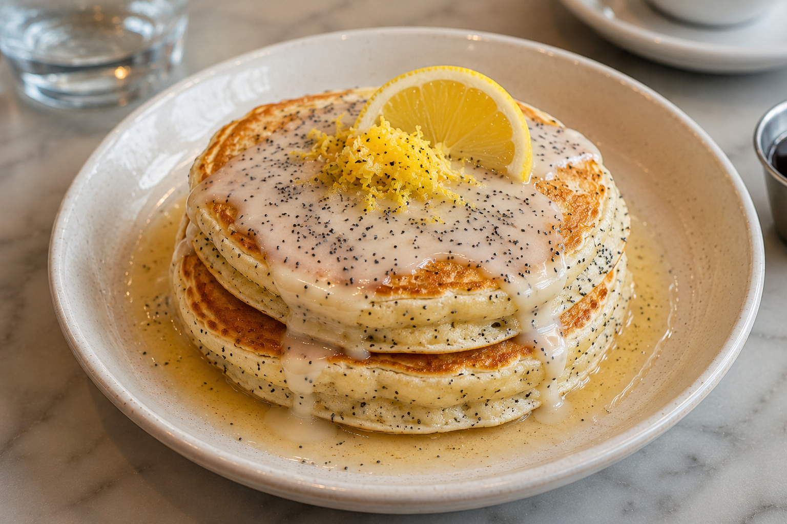

Home
Lemon Poppy Seed Pancakes

Description
Fluffy lemon poppy seed pancakes bursting with bright citrus flavor and a delicate crunch from the poppy seeds. Light, sweet, and perfectly soft, they make a refreshing and comforting breakfast treat.
Ingredients
- 1 rounded tablespoon white sugar
- 1 tablespoon lemon zest, or more to taste
- 5 teaspoons poppy seeds
- 1 large egg
- 3 tablespoons butter, plus more for the pan
- 3 tablespoons lemon juice
- 1 cup whole milk
- 1 1/2 cups all-purpose flour
- 1 teaspoon salt
- 2 teaspoons baking powder
- 1/4 teaspoon baking soda
- Lemon wedges (optional)
Steps
- Combine sugar and lemon zest, and stir to combine. Let stand about 15 minutes.
- Whisk flour, salt, baking powder, and baking soda together in a separate bowl. Set aside.
- Add poppy seeds, egg, and melted butter to the bowl of sugar, and whisk thoroughly. Add lemon juice, milk, and flour mixture. Whisk gently just until flour disappears. Let batter rest for 10 to 15 minutes before using.
- Heat a nonstick skillet over medium heat, and generously grease with melted butter or vegetable oil.
- Transfer about 1/3 cup of batter into the pan for each pancake, and cook until a few bubbles start to pop through the surface, 3 to 4 minutes. Flip and cook the second side 3 to 4 minutes. Serve immediately.